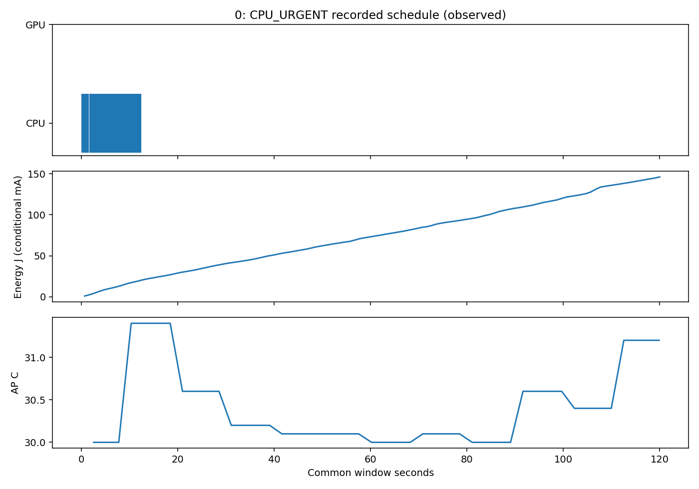
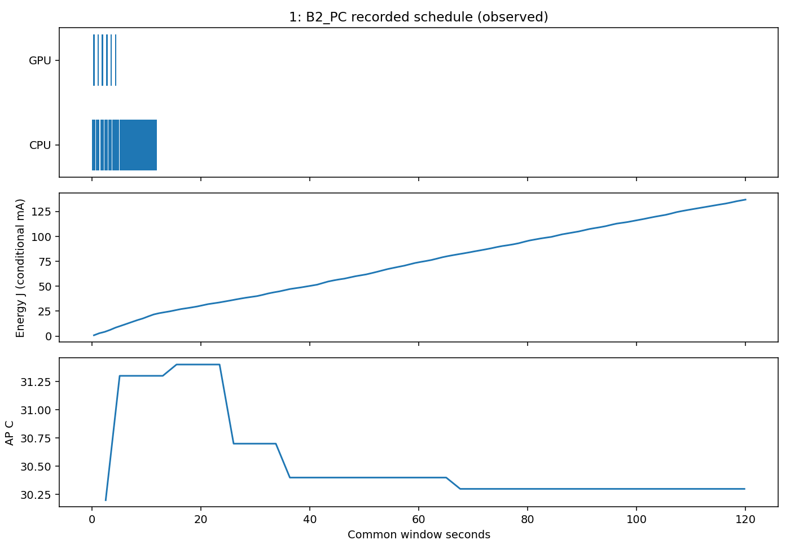
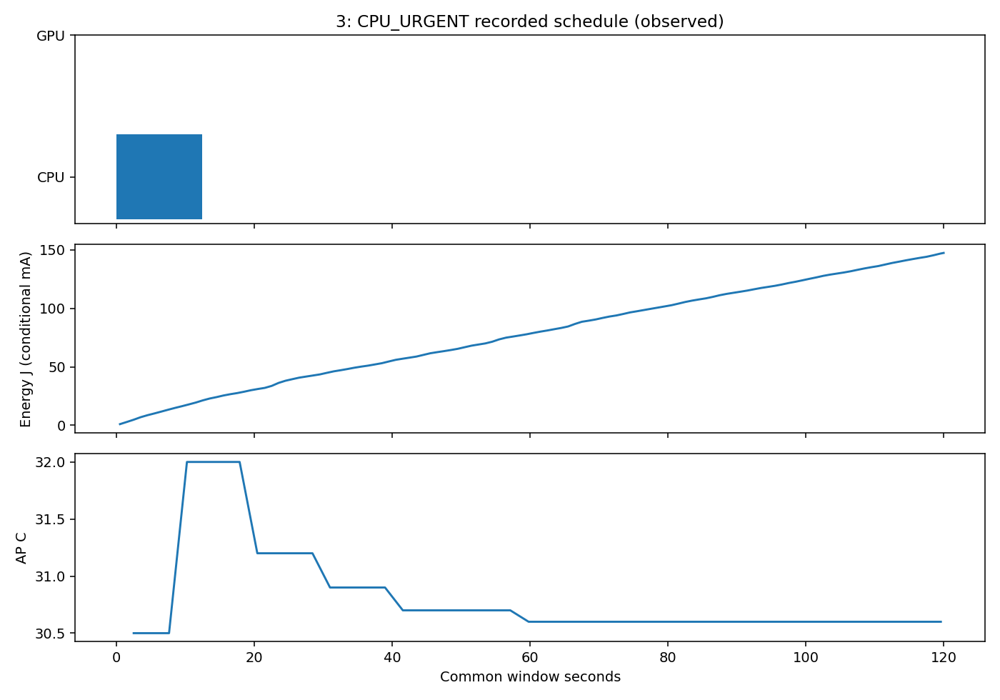

온라인 정책 검증·일반 모형 정확도·우월성 PASS 아님. 조건부 전류 단위, 절대 정확도 미인증.
수치와 누락 · B2−CPU 사전 두 쌍| 순서/기록 일정 | 120초 J | 초기/최고 AP °C | urgent P95 ms | 마감 충족 |
|---|---|---|---|---|
| 1 CPU_URGENT | 146.153 | 30.1/31.4 | 640.713 | 18/24 |
| 2 B2_PC | 136.955 | 30.2/31.4 | 357.952 | 20/24 |
| 3 B2_PC | 145.800 | 30.5/31.5 | 313.261 | 20/24 |
| 4 CPU_URGENT | 147.412 | 30.6/32.0 | 640.591 | 18/24 |
B2−CPU 사전 두 쌍: −9.198 / −1.611J; 평균−5.405J. 두 B2 자체 차이8.845J가 평균차보다 큽니다. 두 쌍의 동일 방향과 효과 크기 변동을 함께 보고하며 안정적 절감률·통계적 우월성으로 해석하지 않습니다. 모든 예정 요청24개를 분모에 포함합니다.


